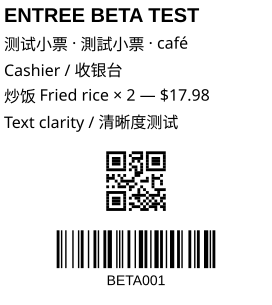

Windows receipt printing
Clear receipts.
A simple print API.
Preview receipts in your app. Print through Windows with clear text, QR codes and barcodes.

Chinese, English, QR and Code128.
Set up Windows
Install Entree Print on the Windows computer that can access your printers. A web app, tablet or desktop application connects to that computer. Entree POS is one possible client.
- Install the printer in Windows.
Choose its paper size and printing preferences in the driver. USB, Ethernet and Wi-Fi queues all use the Windows spooler.
- Open the tray application.
In a development package, run
tray/EntreePrintTray.exe. Settings opens on manual launch. The printer icon may be under the hidden-icons arrow near the clock. - Configure API access.
Generate a token, enter your application's website address when using a browser, and save. Use the Windows Service menu to install/start the service on your test host.
Runtime and browser requirements
The current build needs Windows x64 with .NET, ASP.NET Core and Windows Desktop 10.0.12 or a later 10.0 patch, plus Edge or Chrome for layout preparation. Install fonts for the languages you print. Node SDK usage requires Node.js 18+; browser storage tests use Node.js 22+.
LAN transport currently uses HTTP. HTTPS deployment and browser mixed-content/private-network behavior remain release checks. A checksum and allowed website list do not encrypt traffic.
An 80 mm roll can have a narrower printable area. Omit setWidth() to use the driver's area automatically. An explicit width only narrows it.
Connect your app
Bundle the SDK directory with your application. connect() returns a connected print library; retrieve printer objects from print.getPrinters().
The IP is the print-service computer's address, not the printer's address. Use 127.0.0.1 when your client runs on that same computer. Connection failure throws an error. Each returned library stays bound to its selected server.
Preview and print the same ticket
render() prepares the layout and returns display-ready HTML. It produces no paper. Display that HTML in a sandboxed iframe, then print the same ticket on the operator's action.
Persist a unique intent key for each destination and intended copy. Do not use only an order number: kitchen slips, later changes and reprints are separate actions.
Which HTML can I use?
Use self-contained text and supported layout CSS. The renderer draws positioned text and vector graphics through the Windows driver. Images, scripts, external styles/fonts, transforms and several advanced CSS features are rejected rather than silently flattened into a blurry screenshot.
Long receipts paginate within the driver's default pages without shrinking text. The HTML preview is continuous; it does not currently show page boundaries. Test your templates and printer's feed/cut behavior before rollout.
Add QR codes and barcodes
Use content blocks to keep text and codes in one prepared receipt. No image conversion is needed.
Supported code formats are QR, Code128 and Code39. Code dimensions follow the printer's dot resolution. Chinese/English output and both QR and Code128 scanning passed the cashier pilot; test other printer/driver combinations separately.
Find a print server
Use the native entry point in Node or Electron's trusted main process. Awaiting search() collects verified servers. search().connect() selects the first successful connection.
Heartbeat starts after connection. It checks the service, not paper sensors. Address recovery can find the same service at a new IP; automatic transfer to another server is not implemented yet.
Read status with the right meaning
Query the selected queue, retrieve job history, or show the original saved preview. Printer observations come from Windows; unsupported sensors may be unknown.
Keep a print monitor up to date
Subscribe to job and printer changes. The SDK resumes missed updates after a disconnect and refreshes current state when older history has expired. Use sync: live to show that the monitor has caught up.
The monitor methods represent your application's UI or shared state. A synchronization event replaces the full printer list; job updates carry versions. Monitoring does not resend tickets.
- Accepted by the plugin
- The job is saved durably. An observed offline or paper-out destination can wait while other printers continue.
- Completed by Windows
- The spooler reported completion for that job. It is not independent confirmation that paper emerged.
- Needs attention
- Delivery is unresolved. Keep the intent and evidence; do not automatically send another copy.
Recover a lost acknowledgement
A response can be lost after a ticket is accepted. Keep its key and owning service identity. The SDK checks request bytes and acknowledgement identity, and retries preserve the same request.
Lookup remains available after a finished receipt's layout expires. Saved layouts normally last seven days; pending and uncertain server jobs do not expire. An operator-requested reprint uses a new action key and reprintJob().
Keep tickets that have not been sent
The optional browser/Electron renderer outbox saves source content before network work, then exact request bytes before submission. Call flush() after reconnect or application startup.
Each printer progresses in order; another destination can continue independently. A local pending record is not a plugin acceptance. The outbox requires IndexedDB and Web Locks and stops when the application closes.
Storage and operator controls
Local storage retains up to 10,000 records without automatic pruning. Clearing site data removes this local history. Locks coordinate tabs within one application origin, not separate tablets.
retry() re-enables the same saved request. cancel() is available before a request has been saved for submission. stopRetrying() lets an operator stop local retries and release later work; it does not cancel a possible server/Windows job. All three take { serviceId, idempotencyKey }.
This outbox prepares source content when dispatching. Use a ticket's render() and print() for an already reviewed preview. Node main-process storage needs an application-provided transactional adapter.
Use device helpers when supported
Drawer, beep and cut helpers are optional device operations. Configure verified bytes for the model on the service; ordinary receipts use Windows driver settings.
sendCommand(Uint8Array) is also available when raw commands are enabled for the queue. The client outbox handles receipts only and does not automatically replay device helpers.
API at a glance
Connect
EntreePrint.config(options)EntreePrint.connect(options?)EntreePrint.search(options?)EntreePrint.disconnect()Configure the service and manage SDK connections.
Print library
print.getPrinters(options?)print.target(name)print.getJobs(printer?, filters?)print.getJob(idOrKey)print.getJobRender(id)print.reprintJob(id, options)Queries and tickets remain bound to this service.
Ticket
target.setContent(content)ticket.setWidth(mm)ticket.render()ticket.print(options?)Builders return immutable ticket snapshots.
Client recovery
EntreePrint.outbox()outbox.enqueue(intent)outbox.flush(print)outbox.list()Retain client work before the service accepts it.
Read the full SDK guide for method arguments, errors, events and recovery controls.
Build now. Installer next.
The 0.0.1-beta milestone is still in development. Source builds and printer clarity checks are complete for the tested setup. Installer deployment, protected LAN access and failure pilots remain open. No mature installer is published yet.
For development, use the .NET SDK pinned by global.json, Node.js 22+, and Edge or Chrome. Publish to a new directory.
The installer will be attached to the GitHub release when the milestone passes. Follow the release checklist for current evidence.